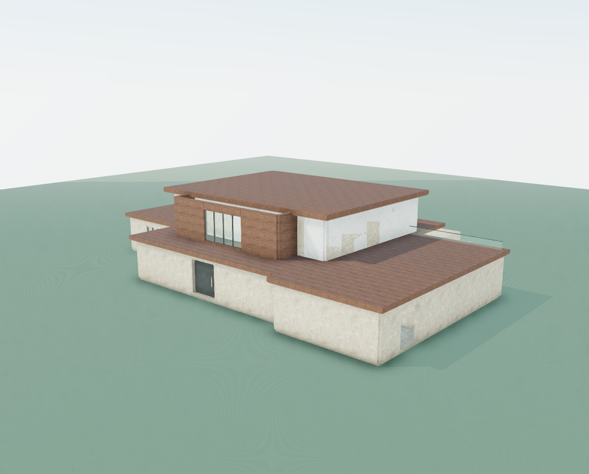
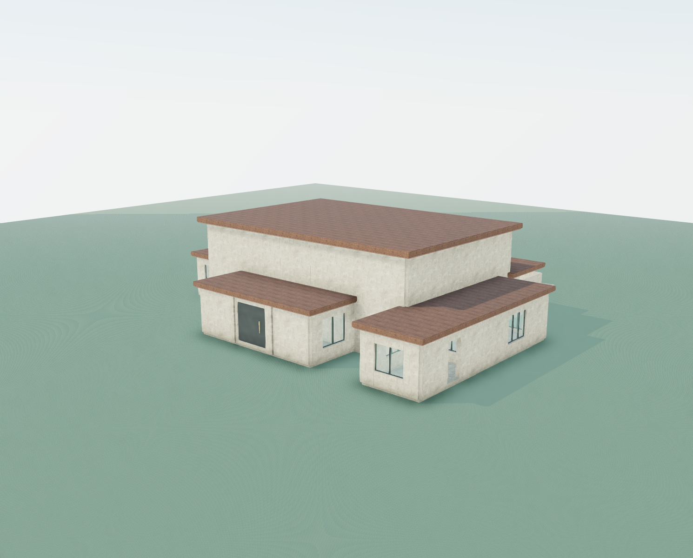
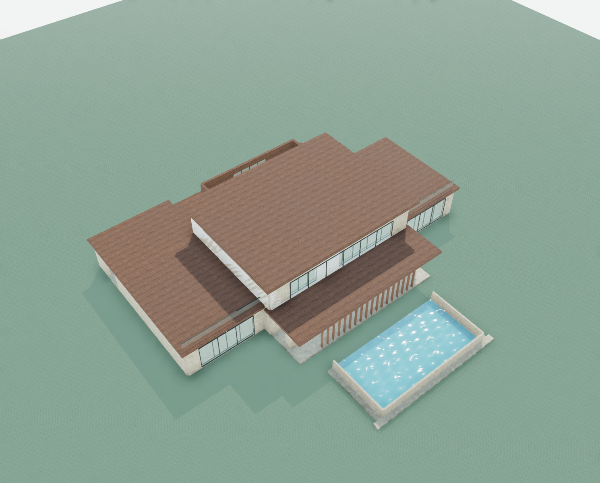
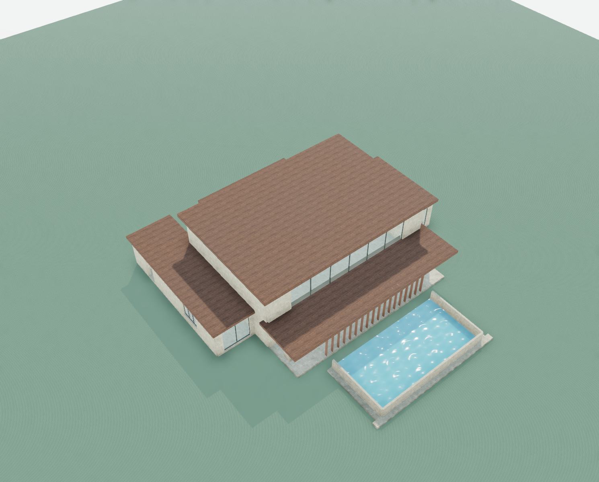
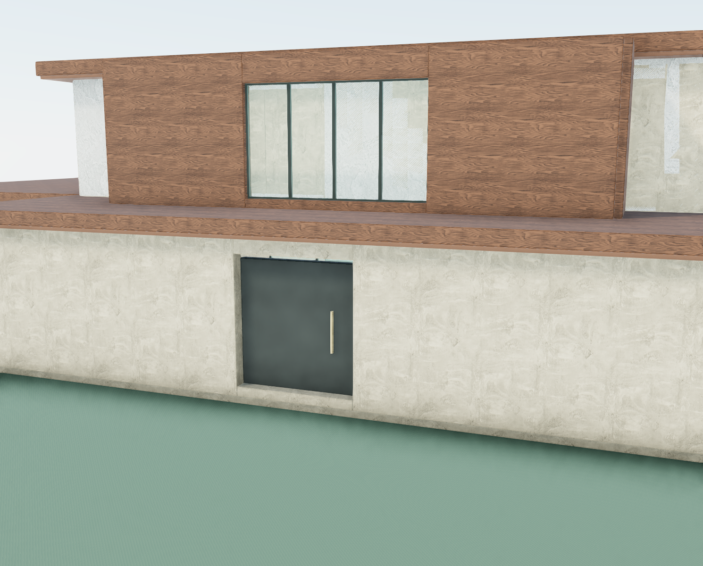
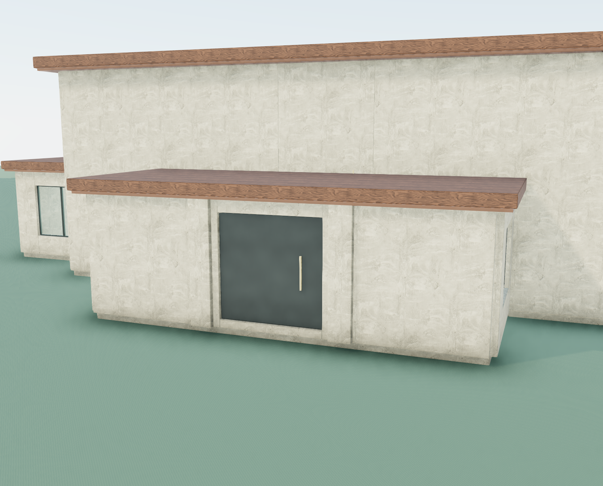
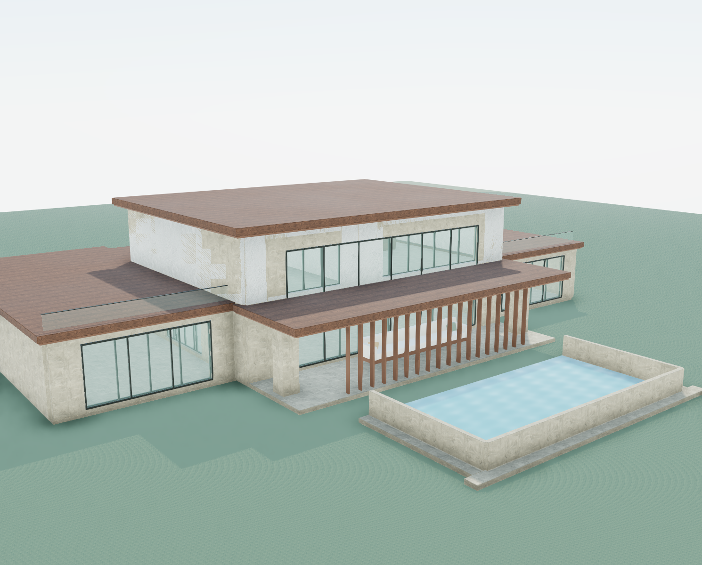
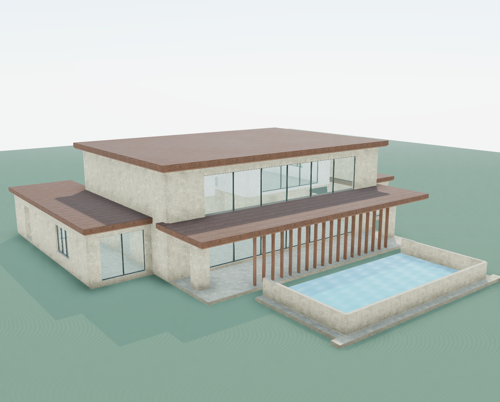
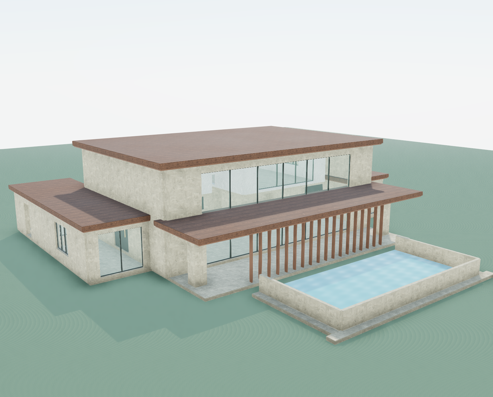

Actual workspace viewer, identical camera poses per row. All candidates remain unapproved. Click images for full resolution. The three internal door repairs do not change exterior massing.
| View | Original | Terra output | Repaired |
|---|---|---|---|
| arrival |  |  | |
| aerial |  |  | |
| entrance |  |  | |
| poolside |  |  |  |